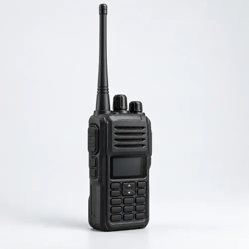
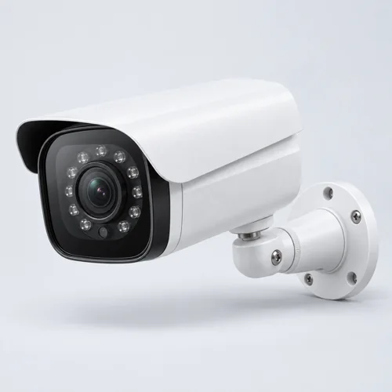
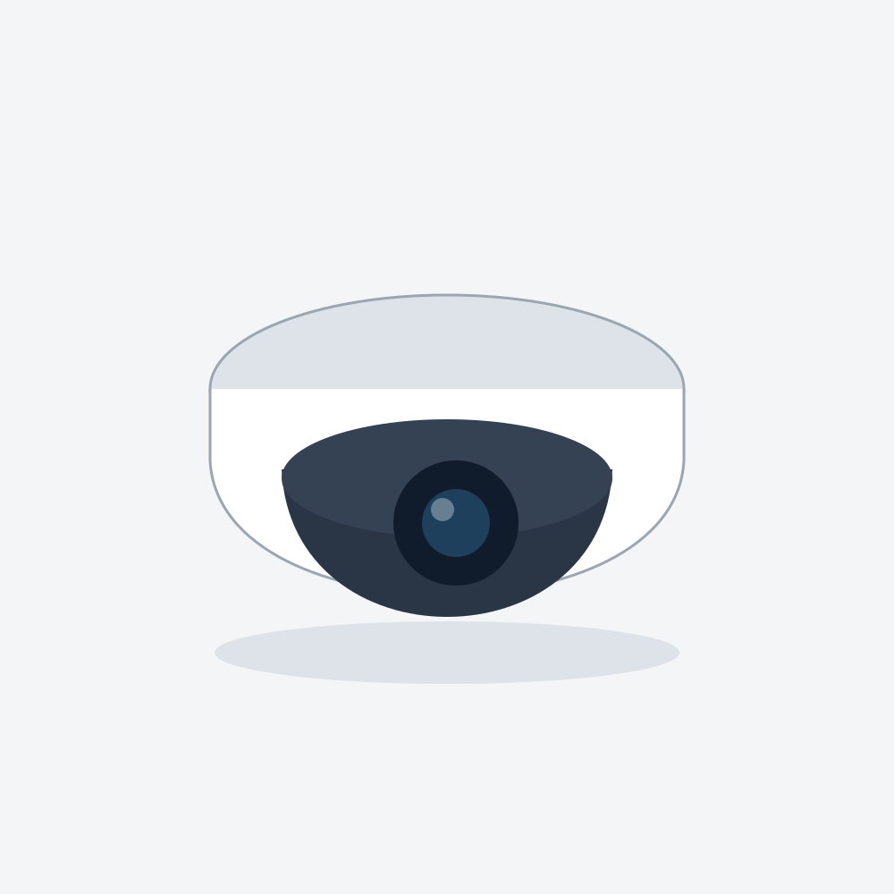
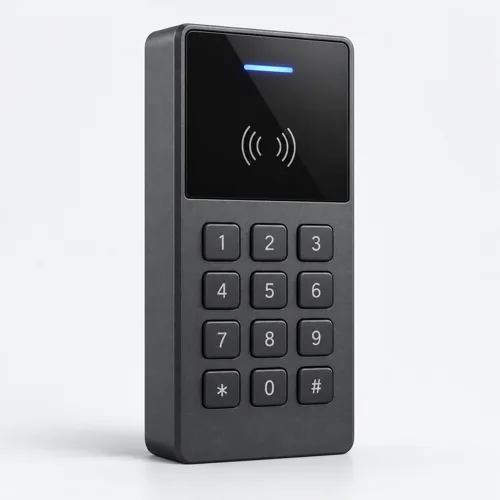
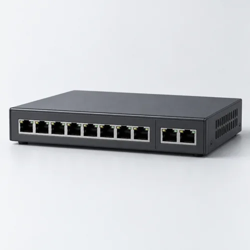
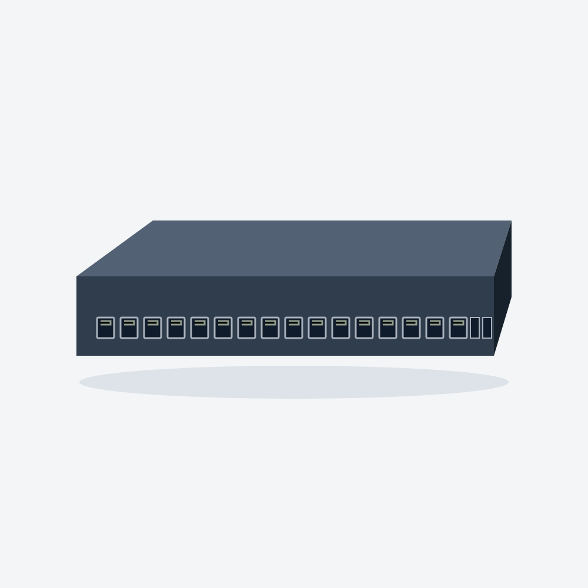
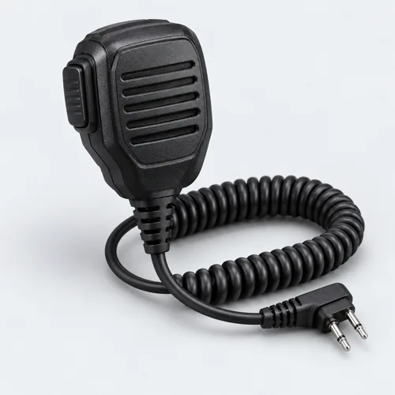
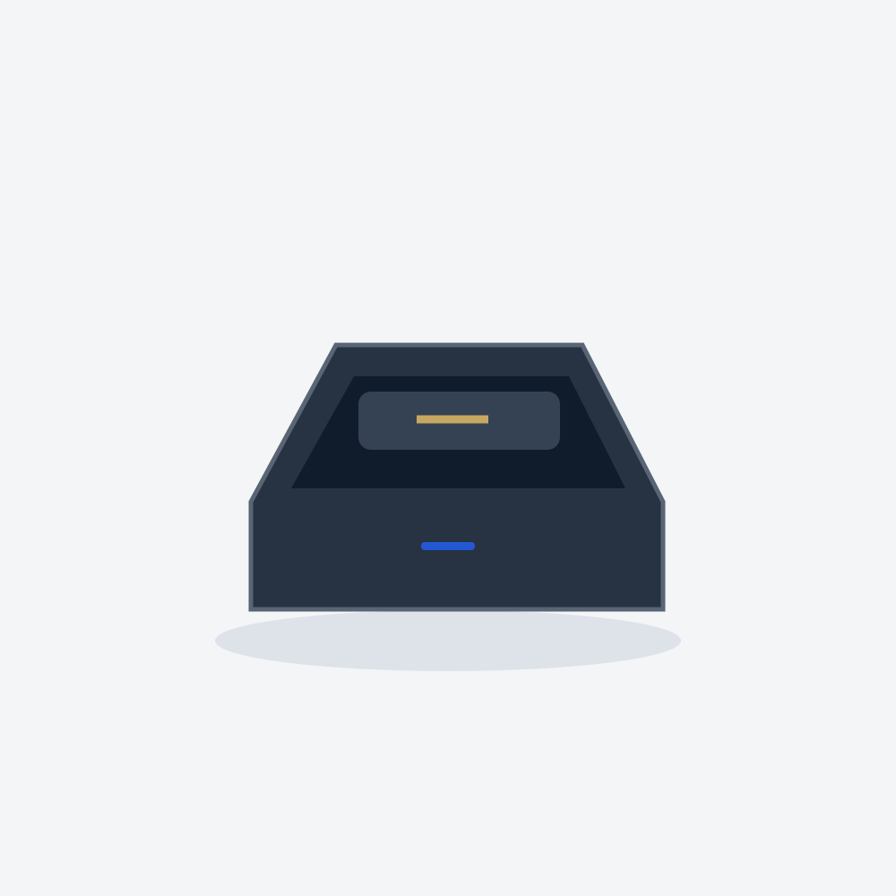

R-450Радиосвязь
LegacyLab R-450
Портативная цифровая радиостанция
- 400–470 МГц
- 1 / 5 Вт
- IP67
Стоимость по запросуПодробнее
Оборудование LegacyLab
Найдите модель по параметрам или начните с технического подбора.
Комплектацию, стоимость и доступность уточним в предложении.
Все 12 моделей, их характеристики и изображения представлены для демонстрации. Серийные модели внутри категории могут использовать общую иллюстрацию корпуса.

R-450Радиосвязь
Портативная цифровая радиостанция
Радиосвязь
Портативная аналоговая радиостанция
Радиосвязь
Цифровая радиостанция с усиленной защитой

C-420Видеонаблюдение
Уличная IP-камера
Видеонаблюдение
Уличная IP-камера высокой детализации

C-410Видеонаблюдение
Внутренняя купольная IP-камера

A-210Контроль доступа
Считыватель с клавиатурой
Контроль доступа
Считыватель с защищённым интерфейсом

N-810Сетевое оборудование
Управляемый PoE-коммутатор

N-1610Сетевое оборудование
Управляемый PoE-коммутатор на 16 портов

M-45Аксессуары
Выносной микрофон-динамик

CH-45Аксессуары
Зарядный стакан
Попробуйте изменить запрос или уточните задачу вместе со специалистом.